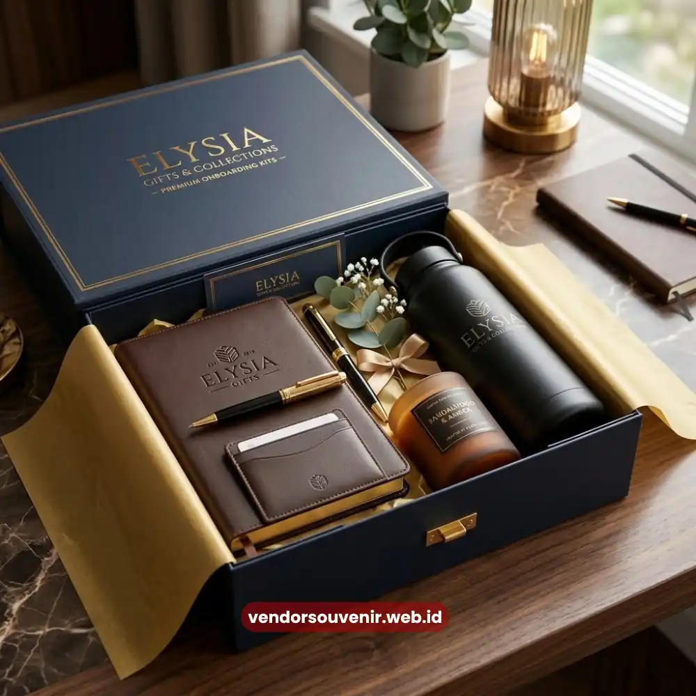

Daftar Isi
Souvenir onboarding kit adalah paket sambutan berisi merchandise branded yang diberikan perusahaan kepada karyawan baru.
Paket ini bertujuan untuk memperkuat kesan pertama dan identitas brand sejak awal mereka bergabung.
Paket ini biasanya diserahkan pada hari pertama masuk kerja, sebagai simbol bahwa karyawan resmi menjadi bagian dari tim.
Semakin banyak perusahaan di Indonesia menjadikan souvenir onboarding kit sebagai bagian tetap dari proses rekrutmen mereka.
Hal ini membuktikan bahwa strategi ini sangat efektif dalam menyambut anggota tim baru.
- Souvenir onboarding kit membuat karyawan baru merasa diterima sejak hari pertama bekerja.
- Kit yang dirancang tepat memperkuat identitas visual sekaligus budaya perusahaan.
- Item populer meliputi tumbler, notebook, tote bag, kaos, dan lanyard branded.
- Kustomisasi logo pada souvenir meningkatkan brand recall karyawan dalam jangka panjang.
- Vendor Souvenir menyediakan paket onboarding kit custom logo yang siap dikirim ke seluruh Indonesia.
Apa Itu Souvenir Onboarding Kit dan Mengapa Penting?
Souvenir onboarding kit adalah kumpulan barang bermanfaat berlogo perusahaan yang diberikan kepada karyawan baru sebagai bagian dari proses orientasi kerja.
Kehadirannya penting karena kesan pertama di tempat kerja sangat memengaruhi rasa memiliki dan motivasi karyawan sejak awal.
Bagi perusahaan, momen pertama karyawan bergabung adalah kesempatan emas untuk menanamkan budaya kerja secara nyata.
Hal ini jauh lebih efektif dibandingkan hanya sekadar lewat presentasi atau dokumen kebijakan.
Sebuah tumbler, notebook, atau tas kerja yang dicetak dengan logo perusahaan menjadi representasi fisik dari identitas brand.
Yang mana barang-barang tersebut akan digunakan oleh karyawan dalam aktivitasnya setiap hari.
Banyak riset di bidang human resources menunjukkan bahwa pengalaman onboarding yang positif berkorelasi dengan retensi karyawan.
Tingkat retensi karyawan tersebut terbukti menjadi lebih tinggi pada perusahaan yang menerapkannya.
Riset Gallup pada periode 2019 misalnya mencatat bahwa hanya sekitar dua belas persen karyawan yang merasa puas.
Mereka merasa perusahaan tempat mereka bekerja benar-benar menjalankan proses onboarding secara maksimal.
Angka ini menunjukkan masih terbuka peluang besar bagi perusahaan yang ingin tampil beda melalui sentuhan kecil.
Seperti halnya souvenir onboarding kit yang dipersiapkan dengan matang dan profesional.
Apa Saja Manfaat Souvenir Onboarding Kit bagi Perusahaan dan Karyawan?
Souvenir onboarding kit memberi manfaat ganda, yaitu memperkuat pengalaman karyawan sekaligus memperluas visibilitas brand.
Manfaat ini terasa baik dari sisi internal maupun eksternal perusahaan di lingkungan kerja sehari-hari.
Dari sisi karyawan, kit ini menghadirkan rasa dihargai sejak hari pertama mereka melangkah ke kantor.
Barang-barang fungsional seperti notebook untuk mencatat arahan kerja sangat dibutuhkan.
Tumbler untuk kebutuhan harian, atau lanyard untuk kartu identitas, langsung terasa manfaatnya tanpa perlu waktu adaptasi panjang.
Dari sisi perusahaan, souvenir onboarding kit berfungsi sebagai media branding berkelanjutan yang sangat efektif.
Setiap kali karyawan menggunakan tumbler atau tas berlogo perusahaan di ruang publik, terjadilah promosi brand.
Secara tidak langsung terjadi promosi brand yang organik dan gratis.
Selain itu, kit ini juga memperkuat konsistensi visual identitas perusahaan di berbagai lini operasional.
Mulai dari kantor pusat hingga seluruh cabang perusahaan yang ada di berbagai daerah.
Manfaat lain yang sering terlewat adalah efek psikologis pada proses adaptasi karyawan baru.
Karyawan yang menerima kit onboarding yang rapi dan berkualitas cenderung merasa perusahaan sangat serius.
Perusahaan dianggap profesional dalam mengelola sumber daya manusianya dengan baik.
Sehingga pada akhirnya mampu meningkatkan kepercayaan karyawan sejak awal masa kerja mereka.
Bagaimana Cara Kerja Program Onboarding Kit di Perusahaan?
Program souvenir onboarding kit umumnya berjalan melalui tahap perencanaan, produksi, dan distribusi yang rapi.
Tahapan ini diselaraskan dengan jadwal masuk kerja karyawan baru agar tidak terjadi keterlambatan.
Alurnya dirancang agar kit sudah siap sebelum hari pertama karyawan benar-benar bergabung.
Tahap pertama adalah perencanaan kebutuhan, di mana tim HRD menentukan jenis barang dan jumlahnya.
Jumlah kebutuhan didasarkan pada proyeksi rekrutmen, serta anggaran yang tersedia saat itu.
Setelah itu, desain logo dan elemen visual perusahaan disesuaikan dengan media cetak pada item souvenir.
Mulai dari sablon, bordir, hingga laser engraving tergantung jenis bahan yang digunakan.
Tahap berikutnya adalah produksi massal oleh vendor souvenir yang dipercaya menangani kebutuhan tersebut.
Proses ini biasanya mencakup quality control untuk memastikan hasil cetak logo rapi pada setiap unit.
Setelah produksi selesai, kit dikemas dalam paket yang siap diserahkan langsung kepada karyawan baru.
Biasanya diserahkan pada hari pertama masuk kerja, baik dalam bentuk goodie bag maupun kotak khusus.
Banyak perusahaan skala menengah hingga besar kini menjadikan proses ini sebagai bagian standar.
Hal ini menjadi bagian tetap dari standard operating procedure rekrutmen mereka di kantor.
Bukan lagi sekadar pelengkap seremonial yang hanya dilakukan sesekali saja.

Penerapan Custom Logo pada Souvenir Onboarding
Jenis Souvenir Onboarding Kit yang Paling Dicari HRD
Jenis souvenir onboarding kit yang paling banyak dipesan HRD adalah kombinasi barang fungsional harian.
Tentunya dengan barang yang mudah terlihat di ruang kerja maupun ruang publik secara umum.
Kombinasi ini dipilih karena memberikan manfaat langsung sekaligus efek branding yang optimal.
Beberapa item yang konsisten menjadi favorit meliputi tumbler custom logo dan notebook atau agenda kerja.
Tote bag atau tas kanvas untuk membawa perlengkapan kerja juga sangat digemari.
Kaos polo atau kemeja seragam ringan, serta lanyard dan id card holder yang digunakan setiap hari.
Selain barang fungsional tersebut, banyak perusahaan juga menambahkan pulpen custom dan sticky notes.
Hingga paket alat tulis dalam satu set agar kit terlihat lebih lengkap saat diserahkan.
Untuk perusahaan dengan budaya kerja yang lebih santai, mug custom sering menjadi pilihan utama.
Begitu pula tumbler stainless karena penggunaannya yang tinggi di lingkungan kantor modern.
Studi internal industri corporate gifting menunjukkan bahwa kombinasi tiga hingga lima item dianggap optimal.
Kombinasi dalam satu paket onboarding kit dianggap paling pas dan tidak berlebihan.
Karena cukup lengkap tanpa terkesan membebani anggaran perusahaan yang telah ditetapkan.
Faktor Apa Saja yang Perlu Diperhatikan Sebelum Memesan?
Faktor utama yang perlu diperhatikan sebelum memesan souvenir onboarding kit adalah kesesuaian anggaran yang ada.
Kemudian kualitas bahan, ketepatan waktu produksi, serta kemudahan proses kustomisasi logo perusahaan.
Keempat faktor ini saling berkaitan dan sangat menentukan kepuasan akhir dari penggunaan kit tersebut.
Anggaran menjadi pertimbangan awal karena akan menentukan jenis dan jumlah item di dalam paket.
Kualitas bahan juga tidak kalah penting, sebab souvenir yang cepat rusak akan berdampak negatif.
Barang rusak justru dapat memberikan kesan kurang profesional, alih-alih memperkuat citra perusahaan.
Ketepatan waktu produksi menjadi krusial karena terikat dengan jadwal masuk kerja karyawan baru.
Biasanya jadwal masuk kerja karyawan ini sudah ditentukan jauh hari sebelumnya.
Vendor yang mampu memenuhi tenggat waktu secara konsisten akan sangat membantu kelancaran proses rekrutmen.
Faktor kustomisasi logo juga menjadi pertimbangan penting dalam memilih vendor yang tepat.
Khususnya terkait teknik cetak yang digunakan pada setiap jenis bahan souvenir yang dipesan.
Apakah menggunakan sablon, bordir, heat transfer, atau menggunakan teknik laser engraving.
Kesalahan Umum HRD Saat Menyiapkan Onboarding Kit
Kesalahan umum yang sering terjadi saat menyiapkan souvenir onboarding kit adalah pemesanan mendadak.
Kemudian minim variasi item, serta kurangnya perhatian pada konsistensi kualitas cetak logo.
Kesalahan ini dapat sangat mengurangi dampak positif yang seharusnya dihasilkan oleh kit tersebut.
Pemesanan mendadak sering terjadi karena kebutuhan rekrutmen yang tidak selalu bisa diprediksi.
Akibatnya, waktu produksi menjadi terburu-buru dan berisiko menurunkan kualitas hasil akhir produk.
Kesalahan lain adalah memilih item yang seragam tanpa mempertimbangkan relevansi kebutuhan kerja.
Sehingga barang tersebut menjadi jarang digunakan setelah beberapa minggu diterima.
Selain itu, tidak sedikit perusahaan yang kurang memperhatikan konsistensi warna dan posisi logo.
Hal ini dapat menimbulkan kesan kurang profesional di mata karyawan baru tersebut.
Terutama jika kit dibagikan dalam jumlah besar secara bersamaan pada program rekrutmen massal.
Kesalahan terakhir yang cukup sering terjadi adalah tidak memperhitungkan waktu pengiriman vendor.
Terutama untuk perusahaan dengan cabang di berbagai kota yang jaraknya berjauhan.
Sehingga kit sering kali tidak siap tepat pada hari pertama karyawan baru bergabung.
Tips Memilih Souvenir Onboarding Kit yang Berkesan
Tips utama memilih souvenir onboarding kit yang berkesan adalah menyesuaikan item dengan kebutuhan harian.
Kemudian menjaga konsistensi identitas visual, serta memastikan pemesanan dilakukan jauh hari sebelumnya.
Kombinasi ketiga hal ini membuat kit terasa lebih bermakna, bukan sekadar formalitas belaka.
Pilih item yang benar-benar relevan dengan aktivitas kerja sehari-hari di lingkungan kantor.
Seperti alat tulis, tumbler, atau tas kerja, sehingga souvenir tetap rutin digunakan dalam jangka panjang.
Jaga konsistensi warna, font, dan posisi logo pada seluruh item yang akan dicetak.
Agar kit terlihat sebagai satu paket yang utuh, menarik, dan tentu saja sangat profesional.
Rencanakan pemesanan setidaknya dua hingga empat minggu sebelum tanggal onboarding karyawan.
Terutama jika jumlah karyawan baru yang masuk cukup banyak pada gelombang tersebut.
Agar proses produksi dan quality control dapat berjalan lancar tanpa harus terburu-buru.
Terakhir, pertimbangkan untuk menambahkan sentuhan personal seperti nama karyawan pada salah satu item.
Karena detail kecil semacam ini sering kali menjadi hal yang paling diingat oleh karyawan baru.
Jika perusahaan Anda ingin menerapkan seluruh tips ini tanpa repot mengurus produksi sendiri, Vendor Souvenir siap membantu.
Kami menyiapkan souvenir onboarding kit custom logo mulai dari konsultasi hingga pengiriman tepat waktu.
Apakah Souvenir Onboarding Kit Bisa Dicustom dengan Logo Perusahaan?
Ya, souvenir onboarding kit dapat sepenuhnya dicustom dengan logo perusahaan pada hampir semua item.
Mulai dari tumbler, notebook, tote bag, hingga lanyard dan pulpen yang sering digunakan.
Kustomisasi logo justru menjadi elemen utama yang sangat membedakan onboarding kit generik dengan kit berkualitas.
Kit ini nantinya benar-benar mampu mencerminkan identitas brand perusahaan dengan baik.
Proses kustomisasi umumnya mencakup penyesuaian warna logo dan juga ukuran cetak pada barang.
Serta teknik aplikasi yang paling sesuai dengan material barang yang dipilih.
Seperti sablon untuk kain, bordir untuk topi atau kemeja, dan laser engraving untuk tumbler stainless.
Semakin detail brief yang diberikan perusahaan, semakin akurat pula hasil akhir yang akan diperoleh.

Pilihan Vendor Souvenir untuk Kebutuhan Onboarding Kit
Souvenir onboarding kit bukan sekadar formalitas, melainkan investasi kecil yang berdampak besar.
Terutama pada pengalaman karyawan baru dan penguatan identitas brand perusahaan secara jangka panjang.
Dengan perencanaan yang matang dan pemilihan item yang relevan dengan kebutuhan karyawan.
Serta kustomisasi logo yang konsisten pada setiap perlengkapan kerja.
Kit ini diyakini mampu menciptakan kesan pertama yang sangat profesional sekaligus hangat.
Maroon Souvenir
Partner Corporate Gift terpercaya di Indonesia. Berpengalaman melayani ratusan perusahaan sejak 2018.
Lihat Portofolio Kami